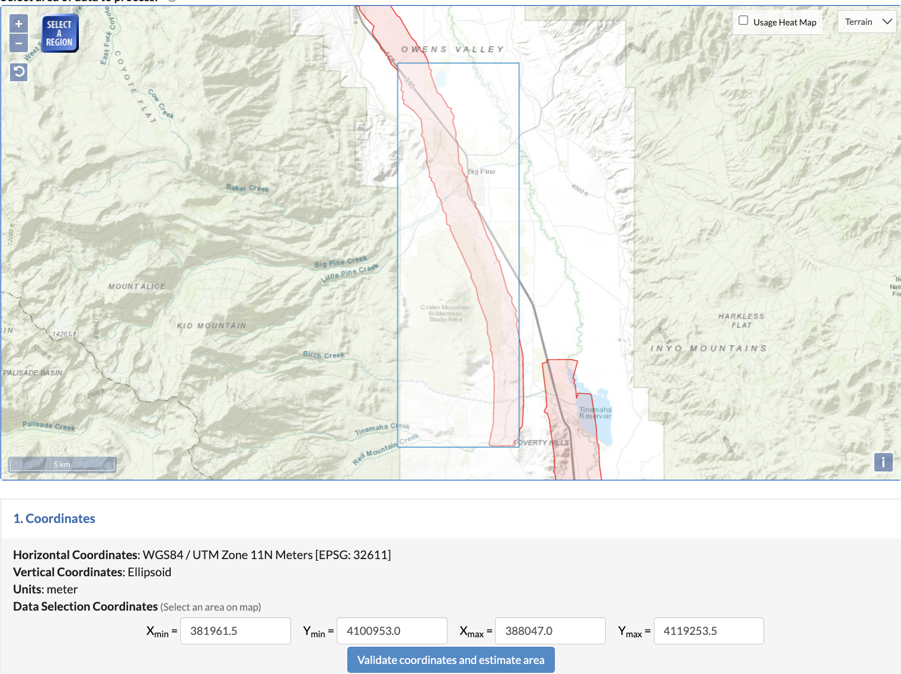
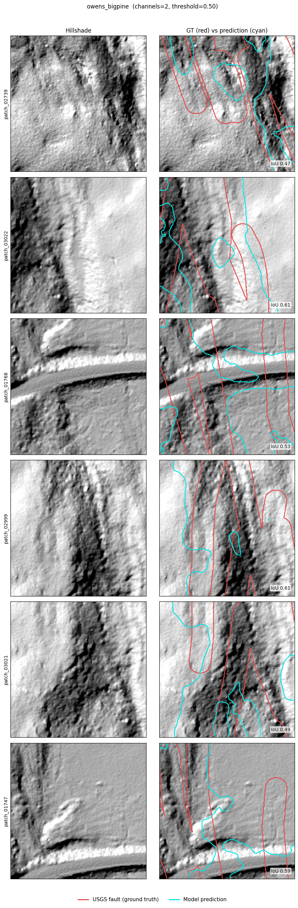
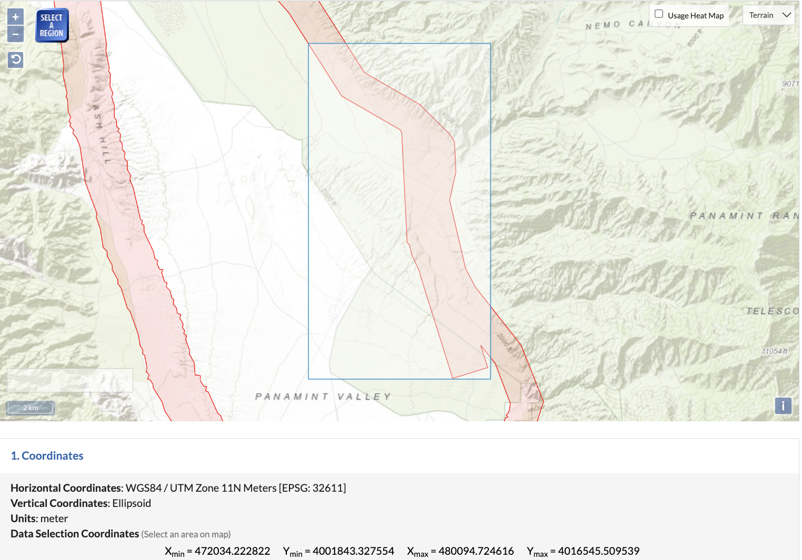
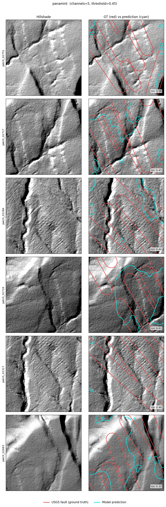
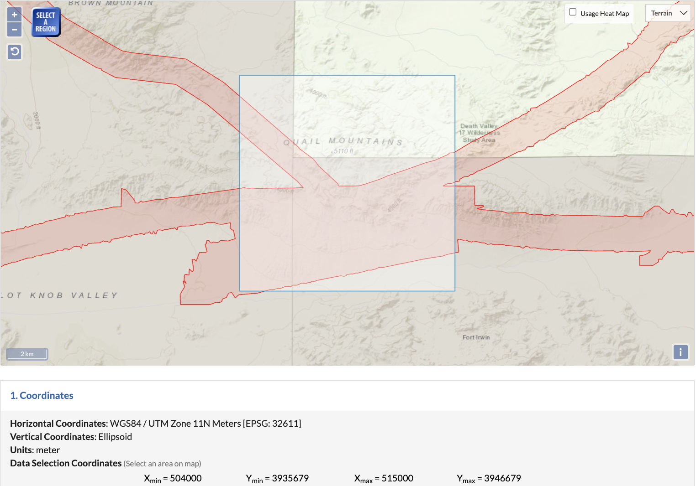
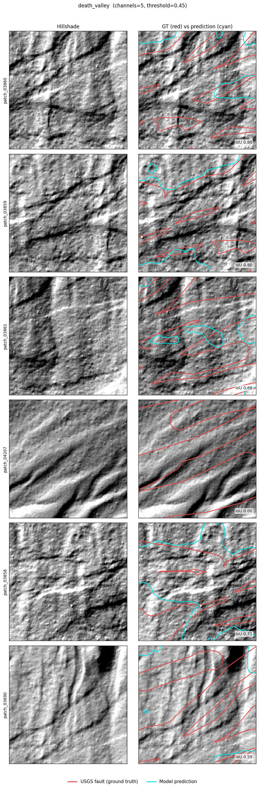
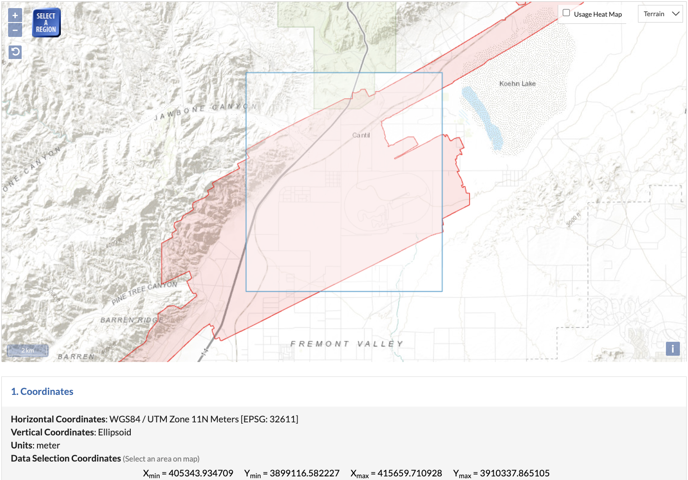
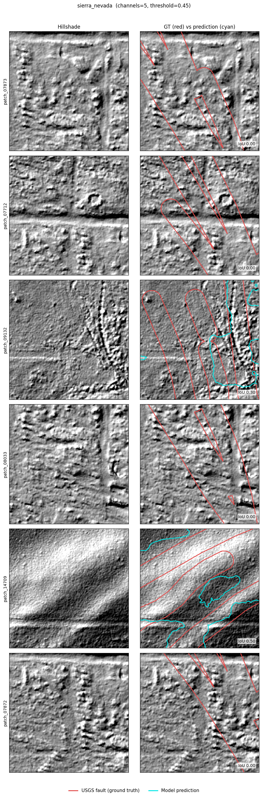

Owens Valley
Big Pine · strongest result

USGS faults
Model prediction
IoU 0.29
A deep learning project that uses LiDAR to find active faults in the landscape. In each image the fault is only a tiny fraction of the pixels, a thin trace among millions of background points, which is what makes it hard to find.
When a fault moves over thousands of years it leaves subtle marks on the landscape: scarps, offset stream channels, and aligned notches along ridges. Bare earth LiDAR strips away the vegetation and reveals these landforms in fine detail.
This project trains a model to recognize those landforms automatically. The model reads images made from LiDAR elevation, mainly a shaded relief view and a slope map, and labels every pixel as fault or not fault. It learns purely by example from the faults already mapped in the USGS Quaternary Fault and Fold Database. The goal is a first pass map of likely active faults across large areas, far faster than a geologist can review by hand. Because a fault is only a thin line, it covers a very small share of the pixels in any image, so the real challenge is finding that rare signal without mislabeling ordinary ground.
A program scans the whole EarthScope Southern and Eastern California LiDAR coverage block by block, measures how much mapped fault length sits inside each block, and keeps the densest. This replaces choosing study areas by hand.
For each area, a separate model learns from shaded relief and slope, in tiles a few hundred meters across, using the USGS mapped faults as examples. Each model is then tested on parts of its area it never saw during training.
Predictions are compared to the USGS faults. Because mapped fault lines are themselves only approximate, exact pixel overlap is a harsh measure, so scoring with a distance tolerance is the next step.
Each area was scored on a test set the model never saw. On a zero to one overlap scale the scores were modest, and they tracked how strongly faulting has shaped the topography rather than anything about the model.
| Study area | Test IoU |
|---|---|
| Owens ValleyBig Pine | 0.29 |
| Panamint ValleyPanamint Range front | 0.16 |
| Quail Mountainsnear Death Valley | 0.09 |
| Cantilnear the Sierra Nevada | 0.07 |
Bars scaled to the strongest area. These are strict overlap scores, which understate a thin line prediction that is only slightly offset.
For each area, the left panel is the setting and the right panel shows the model prediction over the shaded relief.








The same model scored 0.29 in Owens Valley and 0.07 at Cantil. Detection follows how clearly faulting has marked the land, and recall follows with it.
Five terrain channels scored about the same as two on Panamint (0.16 versus 0.14). The limit is the landscape, not the inputs.
The steepest area over predicts, marking ordinary slope lines as faults, so its precision was only 0.22.
Held back test ground scored well below validation. The Quail Mountains fell from a validation 0.23 to a test 0.09.
Fixing a missing data error in how the slope image was built, on its own, raised the Owens Valley test score from 0.08 to 0.29.